OuiSi Nature photographer
Matt Berger
Biodiversity fanatic. I find things. 12,
Bio
Matt Berger has loved being outside for as long as he can remember. As a child, he enjoyed catching bugs, examining them in jars and trying to figure out what they were by looking them up in a field guide. He was enthralled to discover something, identify and learn all about it. His interest in all life forms hasn't ceased. He became obsessed with reptiles and amphibians, plants and birds with a recent interest in fungi. The interest in one subject never waned but was added to all the other subjects being that in the real world they all interact. Matt knows a vast number of plant, animal and fungi species and loves looking for them and photographing them. He also loves to share his knowledge. Matt graduated from West Virginia University in 2012 with a degree in horticulture and then promptly began hiking through the Appalachian Trail in June of 2012 finishing in early December. Then April of 2014 he left for the Californian and Mexican border by himself unsure of what to expect. What he found was the most spectacular landscape imaginable and in this wilderness, he met some of the most interesting, friendly and fun people.
- Social media
- instagram.com/sheriff_woody_pct
13 OuiSi Nature cards
More from Matt Berger
-
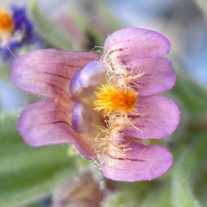
Flower of Barneby's Beardtongue
Card 16
-
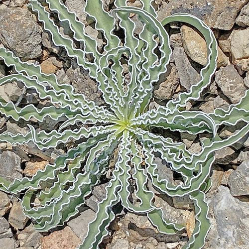
Leaves of the Desert Green Gentian
Card 35
-
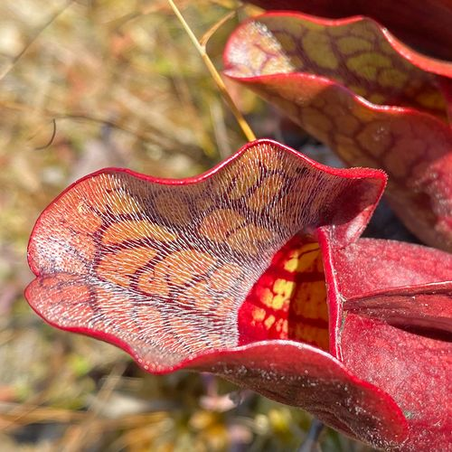
Northern Purple Pitcher Plant
Card 53
-
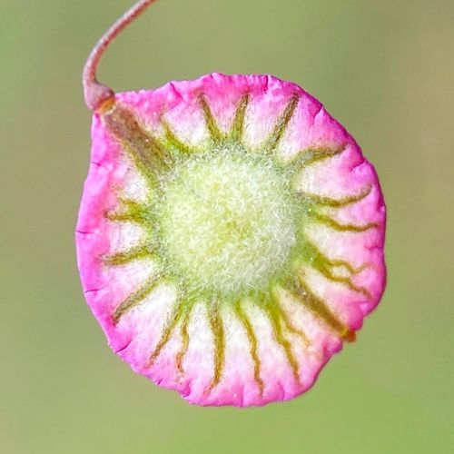
Fruit of the Ribbed Fringepod
Card 71
-
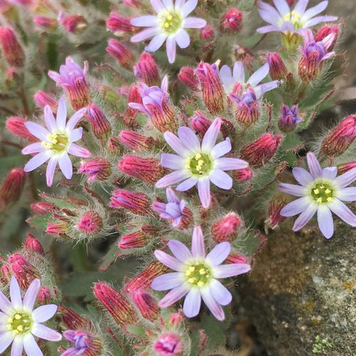
Malesherbia multiflora
Card 89
-
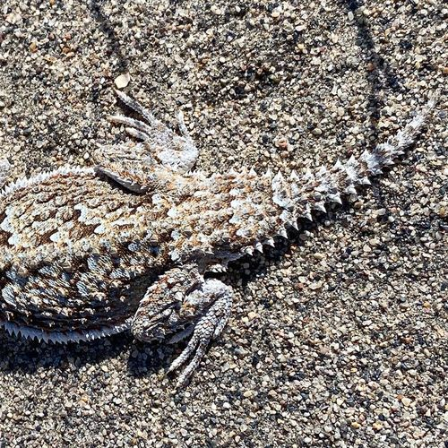
Desert Horned Lizard
Card 107
-
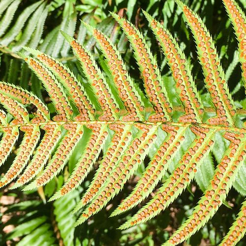
Sori on a Polystichum munitum Frond
Card 122
-
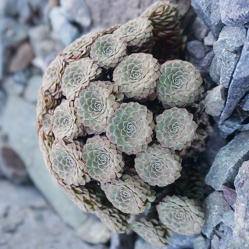
Leaves of Viola atropurpurea
Card 137
-
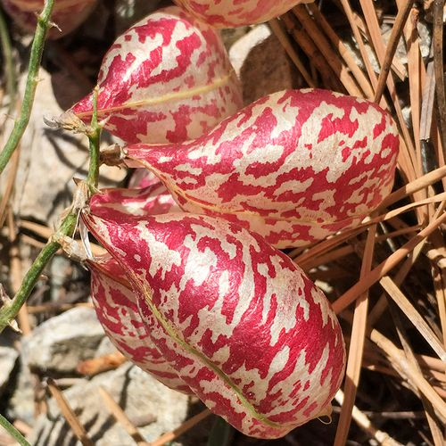
Inflated Fruits of the Balloon Milkvetch
Card 152
-
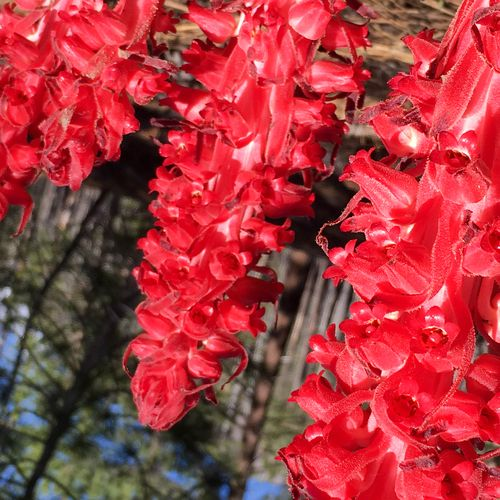
Flowers of Snowplant
Card 166
-
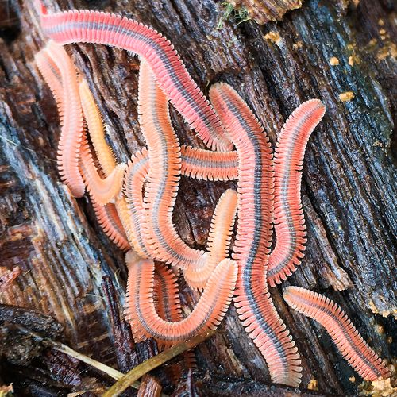
Colony of Brachycybe
Card 180
-
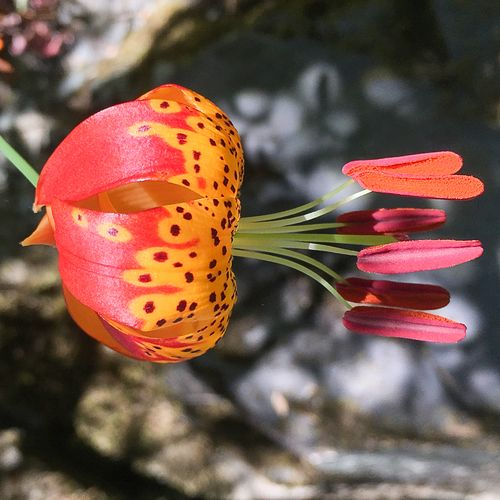
Flower of the Leopard Lily
Card 190
-

Coiled Tail of Ring-necked Snake
Card 198